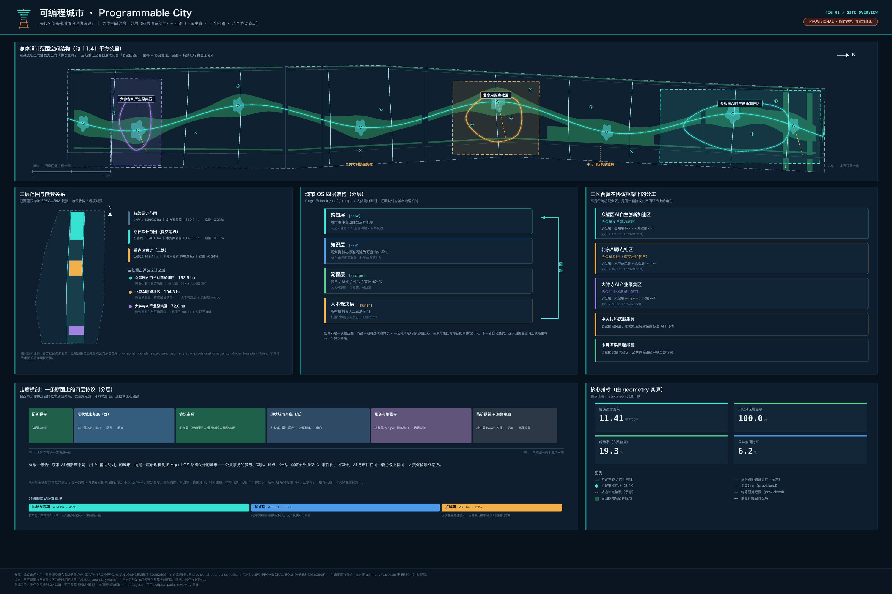
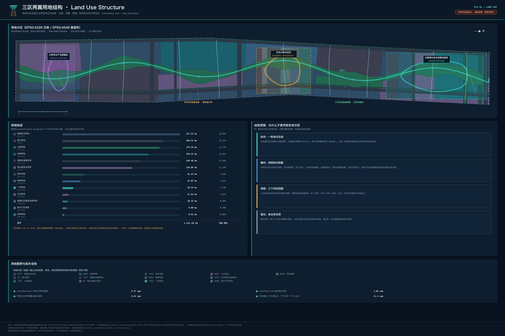
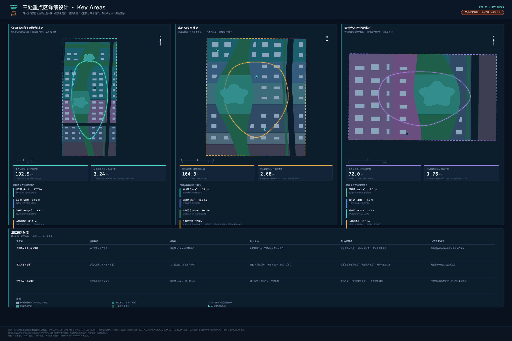
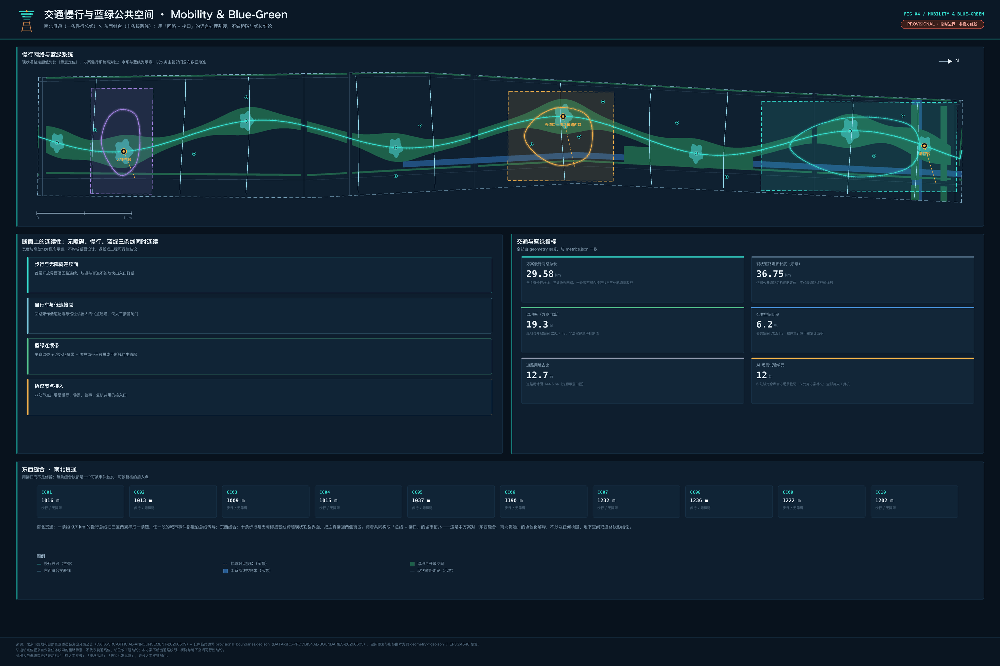
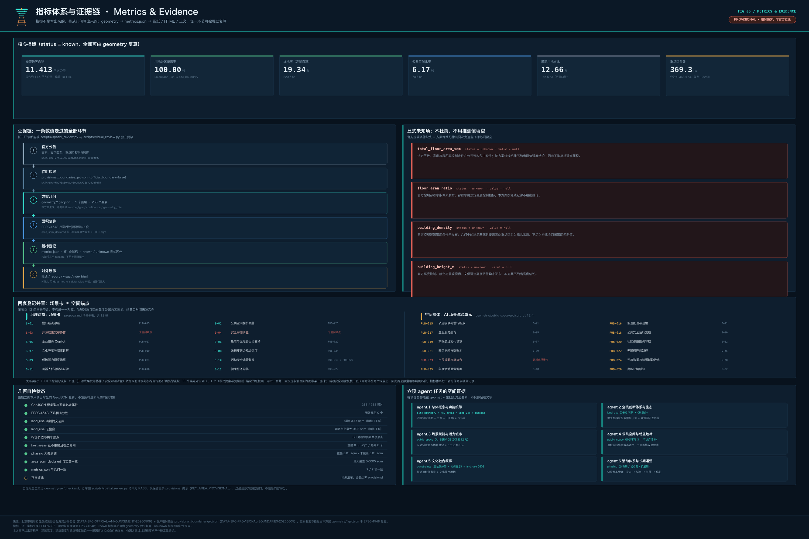

可编程城市：京张AI创新带城市治理协议设计
把京张AI创新带当作一套持续运行的城市操作系统来设计：城市事件触发治理机制（感知层）、规划资料沉淀为可查询知识域（知识层）、公共事务固化为可复核工作流（流程层），并在每个环节设人工裁决闸门。全部空间落地内容均为概念建议与参考方案，边界为临时约束范围，官方红线发布后需整包复算。
可编程城市：京张AI创新带城市治理协议设计
设计依据与资料清单
本方案提出一个与常见做法不同的判断：京张AI创新带真正稀缺的不是又一处产业园区的空间形态，而是一套可以被反复执行、被公开复核、可以持续升级的城市治理运行方式。海淀已经拥有中国密度最高的高校院所、企业和人才资源，缺的是让这些资源在城市尺度上稳定协作的"运行规则"。因此方案把这条带子设计成一座可编程城市（Programmable City）——城市不是一次性画完的蓝图，而是一组可迭代的公共协议加一套持续运行的治理回路。这个判断决定了后续每一章的组织方式：先写机制，再写机制落在哪里，最后写机制如何被检验和修订。
方案的第一依据是北京市规划和自然资源委员会海淀分局发布的《百年京张AI创新带城市设计国际方案征集资格预审公告》，它规定了统筹研究、总体设计、重点区域三层范围与全部必答任务 来源。第二依据是面向全球智能体的开源征集任务书摘录，它规定了三大定位、五大功能、三区两翼、六项智能体任务、十条共创原则与统一边界条款 来源。两份依据的性质不同：前者是法定征集程序的组织文件，后者是面向智能体贡献者的共创约定，本方案对两者分别标注，不混用其权威等级。
场地资料以仓库登记的公开与清权材料为准：brief/site-package/ 提供任务书结构化摘录、枚举、允许设计空间与坐标口径 来源；data/source_registry.json 规定每份资料可否作为 formal 依据 来源；data/processed/agent_fact_pack.md 只作为阅读导航层使用，本身不是新的权威来源 来源。现状诊断因此建立在"哪些事实可用、哪些事实缺失"的双清单上，而不是建立在推测的现状底数上 深度。

必须在开篇写清楚的一件事是边界的性质。官方 SITE_BOUNDARY 与三处 KEY_AREA 的精确 polygon 尚未随资料包发布，本方案使用 brief/site-package/geometry/provisional_boundaries.geojson 生成的临时约束范围（provisional constraint），全部图层标注 official_boundary=false 来源。它可以用于方案生成、拓扑自检、可视化和设计讨论，不能当作官方红线、法定控规、精确面积依据或审批结论 来源。这一组织方数据缺口不阻断内容评分，但官方 polygon 发布后，边界、重点区、用地、道路、绿地、公共空间、建筑、分期与全部指标必须整包复算，而不是替换单个文件。
方案的成果分工遵循投稿包契约：结构化数据是权威，PDF 与网页是呈现。空间证据以 geometry/ 下九个图层为准，数值证据以 metrics.json 为准，任务响应以三份矩阵为准，本文只负责把设计判断讲成人能读懂的话，并在每个判断旁挂上可以回查的依据。读者可以从正文任何一处进入证据，但不需要先读一串机器编号 空间数据 指标。
最后声明措辞纪律，它贯穿全文：本方案提出的全部空间落地内容均为概念建议、参考方案、可供专业团队深化研究；全部协议机制均为建议采用，不描述为已经实施；全部AI场景均标注概念示意、待人工复核、未经批准运营；不给出容积率、建筑高度、开发强度、具体地块拆改留、道路线形、轨道线位、桥隧与地下空间工程可行性等法定或工程结论 来源。凡引用数据必带来源，凡不确定的写"待核实"并进入假设清单。
三层范围工作框架
公告把工作分为三层，本方案把这三层理解成同一套操作系统的三个抽象层级，而不是三张互不相干的图纸。统筹研究范围 43.6 平方公里回答"规则是什么"，总体设计范围 11.4 平方公里回答"规则落在什么空间结构上"，重点区域 368.4 公顷回答"规则在具体街区里怎么被执行和检验" 来源 深度。三层之间是调用关系：下层可以对上层提出修订请求，上层不能绕过下层直接宣布结果。

可编程城市的骨架是四层架构，它直接来自 agent 操作系统的分层抽象，但每一层都必须落到城市里可指认的对象上：
| 架构层 | 城市对应 | 建议采用的运行方式 | 典型城市对象 |
|---|---|---|---|
| 感知与响应层（事件驱动） | 城市事件自动触发对应治理机制 | 人流拥挤、能源峰值、公共反馈、AI服务调用等事件到达阈值即触发既定流程，不靠逐级人工堆审批 | 公共空间节点、慢行断点、活动场地 空间数据 |
| 知识底座层（结构化知识域） | 规划资料、标准、评估结论沉淀为可查询可溯源的知识域 | 市民与AI同源取数，杜绝信息不对称；每条结论保留出处与时效 | 资料登记表、指标体系、图层库 来源 |
| 流程层（可复用工作流） | 参与、试点、评估、审批固化为标准化流程 | 每个流程可复制、可复核、可改进，执行留痕 | 更新项目、活动体系、场景开放 空间数据 |
| 人本裁决层 | 所有机制设人工裁决闸门 | 机器只做建议与执行，最终判断由人完成 | 复核岗、评审会、公众参与环节 来源 |
三层范围与四层架构的交叉，构成本方案的工作框架。统筹研究范围主要生产知识层与流程层的规则；总体设计范围把规则翻译成空间结构、更新框架与设施支撑，达到控制性详细规划的城市设计深度 深度；重点区域范围是规则的执行现场，三处片区各自承担不同的执行角色。这样组织的好处是可检验：任何一条空间建议都能追问"它执行的是哪条协议、由谁触发、谁复核、失败了怎么退回"，答不上来的建议不进入成果。
三区两翼在这个框架下有清晰分工，不是并列的三块地。众智园AI自主创新加速区（192.1 公顷）是协议的研发与算力底座，负责把技术标准、安全评测、自主创新体系写成可执行规则。北京AI原点社区（104.3 公顷）是协议试验田，规则先在真实居民与真实创业者身上试跑，跑通了才向外扩散。大钟寺AI产业聚集区（72.0 公顷）是协议的商业化与展示窗口，把跑通的规则变成可交易、可传播的产品与服务 来源 指标。中关村科技服务翼是协议的服务层，把政府与中介服务封装成标准接口；小月河场景赋能翼是协议的实景试验场，让场景在连续的公共空间里被真实使用 来源。
范围的面积口径需要分清两套数字。公告给出的 43.6 平方公里、11.4 平方公里、368.4 公顷是文字面积，权威但没有精确 polygon；本方案提交的图层面积由临时边界复算得到，用于内部一致性校核，两者在指标体系中分开记录，不互相冒充 指标 指标。凡涉及精度敏感的结论，正文一律使用"约"字与量级表述，精确数值只保存在结构化文件里。
统筹研究范围产业与未来城市研究
统筹研究范围的任务是回答两件事：世界级AI创新生态靠什么机制形成，以及人工智能会把城市变成什么样子。本方案的回答是：生态不是招来的，是用一组降低协作成本的公共协议长出来的；城市形态的变化，本质是把过去分散在各机构内部的判断过程，迁移到公共可见的协议上运行。
总体概念、命名体系与视觉方向（agent.1）
- 中文主名：可编程城市。"可编程"指的是城市治理机制像软件一样具备接口、版本和贡献者，不是指用程序控制市民。
- 英文名：Programmable City。对外传播使用 "open protocol, city as a platform" 作为核心表述。
- 品牌副题：京张AI创新带城市治理协议。命名系统向下延伸为"协议—回路—里程碑"三级词汇：协议对应机制（如参与协议、试点协议），回路对应运行过程（如提案回路、评估回路），里程碑对应可纪念的空间节点。
- 视觉识别方向：以协议、回路、分层抽象为母题；主色建议采用冷调科技蓝绿，配色中保留京张铁路钢轨棕作为历史锚点，形成"新—旧"两极的稳定对照。
- Logo 方向：一条铁轨在纵向生长为分层的城市剖面——铁轨代表京张百年工程与中国人自行设计和建造的第一条干线铁路的历史起点，向上分层代表协议的层级抽象。该方向为概念建议，字体、图形与最终制图须另行清权后由专业团队深化 来源。
- 总体空间结构图的表达要求：用"分层加回路"表达，不用传统色块分区。三区是回路上的三个执行节点，两翼是接入回路的两条服务与场景通道，京张遗址公园是贯穿全带的公共主轴 深度 空间数据。
三大定位在这个概念下各自获得机制含义：百年京张文化带是协议的历史层，说明这套规则从哪里来；都市AI生活体验带是协议的用户界面，说明规则如何被普通人感知；AI融合创新带是协议的执行层，说明规则如何产生产业结果。五大功能则分别落在架构的不同位置：AI全栈自主创新体系与AI治理全球话语权由众智园承担，世界级AI创新生态由原点社区承担，智能原生新业态由大钟寺承担，AI+场景赋能新范式与智能化AI活力城市由小月河翼承担 来源 标准。
综合规划与空间产业融合的创新思路，落在一句可操作的判断上：把"审批一个项目"改造成"执行一段协议"。传统流程中，一个创新项目要落地需要逐个部门沟通，成本高且结果不可预期；协议化之后，项目方按公开规则提交，系统按规则触发对应流程，人工在关键节点裁决，全过程留痕可查。这是本方案对国土空间规划创新的具体建议，属于机制层面的概念建议，具体制度设计须由主管部门与专业团队深化研究。
全球AI创新生态案例与它们验证的协议机制（agent.2）
案例选择遵循一条纪律：只选真实存在、有公开官方页面的创新区，只描述其可公开观察的组织机制，不引用未经核实的投资额、产值与企业名单。以下六个案例分别验证了本方案依赖的一种协议机制 指标。
| 案例 | 位置 | 可公开观察的组织机制 | 它验证了本方案的哪条协议 |
|---|---|---|---|
| Knowledge Quarter | 英国伦敦 King's Cross / Euston / Bloomsbury | 由跨部门机构组成的伙伴关系联盟，成员来自学术、文化、研究、科学与媒体机构，以站点为中心的一英里半径为组织边界 来源 | 成员准入协议：创新区的边界由"谁加入了这套规则"定义，不只由行政边界定义 |
| one-north | 新加坡 | 由法定机构统一开发的知识经济园区，划分为多个功能明确的分区，并在其中设置面向初创企业的专用街区与孵化载体 来源 | 空间分级供给协议：同一园区内为不同成熟度的主体提供不同类型的空间与准入条件 |
| Amsterdam Science Park | 荷兰阿姆斯特丹 | 官方站点按"人才协作、科研协作、初创协作、共创设施"组织服务入口，并公开列出重点领域（含人工智能与数字创新） 来源 | 协作接口协议：把"如何与园区合作"本身做成公开、分类、可自助进入的接口 |
| Research Campus Garching | 德国慕尼黑 | 高校校区与研究机构、技术初创、工业企业在同一园区内紧邻布置，并由城市轨道线路直接连接市中心 来源 | 邻近性协议：把"研究—转化—产业"的物理邻近作为硬性空间条件，而非软性倡议 |
| Sangam Digital Media City | 韩国首尔 | 由市属城市开发公司主导的数字媒体产业新城，围绕新媒体与软件产业组织产学载体与高技术产业中心 来源 | 主体统筹协议：由一个长期责任主体统一持有开发与运营责任，保证规则在十年尺度上不断线 |
| 张江科学城 | 中国上海浦东 | 政府科技主管部门按园区公开列出行政审批与产业服务窗口清单，标明单位、地址与联系方式 来源 | 服务目录协议：把政府服务写成可检索的目录，使"找谁办事"成为公开信息而非经验 |
这六条机制共同说明一件事：世界一流创新区的真正壁垒在协作规则的稳定性，而不在单个建筑或单项政策。京张AI创新带的后发优势在于，它可以从一开始就把这些规则写成公开、可版本管理的协议，而不是十年后再补。以上案例描述均为对公开页面组织方式的定性概括，不含数值指标；如需引用规模、投资或绩效数据，须另行核实并登记来源 来源。
八类要素的协议化（agent.2）
任务书要求回应土地、空间、产业、资金、人才、算力、数据、场景八类要素机制。本方案建议每类要素都写成"准入—流转—退出"三段式协议，因为大多数要素配置失效不是发生在准入环节，而是发生在没有流转规则和退出规则的时候。以下为概念建议，具体规则须由主管部门与专业团队深化研究。
| 要素 | 准入协议（建议） | 流转协议（建议） | 退出协议（建议） |
|---|---|---|---|
| 土地 | 以公开的功能与绩效条件替代个案议定 | 存量空间在同一功能大类内允许按公示流程调整用途 | 约定绩效未达成时的空间收回与再配置路径 |
| 空间 | 按主体成熟度分级供给（孵化位、成长位、总部位） | 主体升级时在带内平移，避免搬离 | 空置超过约定期限的载体重新进入供给池 |
| 产业 | 以场景需求而非行业标签作为准入判断 | 产业链上下游按公开对接目录组队 | 场景验证失败的项目退出并公开经验 |
| 资金 | 明确资金类型与适用阶段，不承诺具体额度 | 阶段性评估结果决定是否续投 | 退出时保留数据与经验资产给公共知识库 |
| 人才 | 以贡献记录而非单一头衔作为服务准入 | 服务包随人流动，跨机构可携带 | 离带人员的贡献记录长期保存 |
| 算力 | 公示可申请的公共算力类型与排队规则 | 按任务优先级与能耗预算动态调度 | 超出能耗预算的任务自动降级并通知申请人 |
| 数据 | 只接受公开或已清权数据，登记授权与用途边界 | 以最小必要范围授权，全程留痕 | 授权到期即失效，衍生结论标注时效 |
| 场景 | 公示场景开放清单与申请条件 | 试点期内定期评估并公开结论 | 未通过评估的场景关闭并归档原因 |
中关村科技服务翼在这套要素协议中承担"服务层"的角色：把分散在多个部门与中介机构的服务，封装成形式统一、输入输出明确的标准接口。张江的服务窗口目录说明这种做法在国内已有可参照的形态 来源。本方案建议进一步把目录升级为协议：每项服务写明触发条件、所需材料、承诺时限、责任主体、复核方式与失败回退路径，使企业与开发者可以像调用接口一样使用政府服务。该建议为机制设想，不构成任何服务承诺或行政安排 标准。
适配AI新质生产力的未来城市形态
人工智能改变城市形态的方式，不是增加更多屏幕，而是改变工作、学习、社交、出行与公共服务的组织颗粒度。本方案给出三条形态判断，均为概念建议：其一，工作空间从"按公司分割"转向"按任务聚合"，因此建议在三区内提高可短期占用、可快速重组的中小尺度空间比例，并在用地结构上为混合功能预留弹性 空间数据。其二，公共空间从"通过"转向"停留与协作"，京张遗址公园沿线的连续绿地应当承担部分正式协作功能，而不只是通行与休憩 空间数据 指标。其三，基础设施从"隐形"转向"可解释"，算力、能源与传感设施在公共空间中应当可见、可读、可被追问，这是把技术治理变成公共议题的前提。上述判断需要在正式控规条件、市政容量与权属信息补齐后由专业团队校核，本方案不给出强度与工程结论 深度。
总体设计范围城市更新与控规深度城市设计
总体设计范围约 11.4 平方公里，要求达到控制性详细规划的城市设计深度。本方案在这一层的核心主张是：城市更新本身应当被写成协议。京张遗址公园周边的城市地区与产业区已高度建成，更新的难点不在于画出理想图，而在于让多个权属主体在长周期内按同一套可预期的规则行动 标准 深度。
总体空间结构建议采用"一轴、三节点、两通道、一回路"的组织方式，全部为概念建议：一轴是京张遗址公园构成的南北公共主轴，它同时是历史层与公共生活层；三节点是三处重点区域，分别承担协议的研发、试验与商业化职能；两通道是中关村科技服务翼与小月河场景赋能翼，前者接入服务，后者接入场景；一回路是把提案、试点、评估、修订串起来的治理回路，它在空间上表现为一条可步行、可停留、可举办活动的连续公共路径 空间数据 深度。这一结构不新增红线，它是对既有范围的组织方式说明。
低效空间识别遵循可复核的方法而不是结论：建议以"公共可达性、功能混合度、界面连续性、设施承载余量"四项可从公开信息与现场踏勘获得的判据，形成候选清单，再由权属核查与专业评估收敛。本方案不点名具体地块的拆改留结论，因为现状建筑、权属、控规与工程条件均未进入本次资料包，任何具体结论都会构成伪精确 深度。建筑基底可从提交图层复核，用于校验图面与指标的一致性，但不等于现状建筑普查结果 空间数据 指标。
产业功能比例与建筑总规模的处理方式同理。方案给出的是配置原则而非配置数字：建议研发办公、成果转化与展示交流、人才居住与生活服务、公共与文化设施四类功能在带内保持可调节的比例区间，并把调节权交给定期评估结果，而不是一次锁定。容积率、建筑高度、建筑密度、退线与建筑控制线在缺少官方控规条件时一律记为待确认，不以推测值冒充审定指标 指标 深度。
综合承载能力评估同样分为可算与待补两部分。可算部分包括：提交边界与重点区面积、绿地与公共空间比例、建筑基底面积、分期范围面积，这些均可从图层直接复算 指标 指标。待补部分包括：人口与就业规模、市政管线容量、能源负荷、交通断面通行能力、公共服务设施缺口，这些需要官方数据支撑，本方案将其列为正式深化的前置条件而不是给出估值。这一区分本身就是控规深度城市设计应有的严谨性，也是本方案在数据缺口下仍然可评审的原因。
城市更新的实施顺序建议与协议的生命周期对齐：协议发布期先做规则与轻量设施，试点期在原点社区等可控范围内验证，扩展期再向全带推广。这一分期在图层中有对应表达，并与更新项目清单联动 空间数据 指标。需要强调的是，实施分期与征集周期是两件事：征集周期是成果提交的时间要求，实施分期是城市更新的推进路径，两者不应混淆。
重点区域详细设计
重点区域范围约 368.4 公顷，包含三处片区，是本次征集的必选深化内容 来源 指标。三处片区在可编程城市框架下不是同一模板的三次重复，而是协议生命周期的三个不同环节：众智园生产规则，原点社区检验规则，大钟寺输出规则。这样安排的直接好处是三处片区之间存在真实的功能依赖，而不是靠交通联系勉强串联。

众智园AI自主创新加速区（约 192.1 公顷）——协议研发与算力底座。 建议围绕国家级人工智能平台、全栈自主创新、标准制定、安全治理与产业展示组织空间，把"标准与评测"这类通常发生在封闭机构内部的工作，部分转化为可参观、可预约、可被公众理解的城市功能。临清河界面建议作为园区的公共客厅，把绿色空间、雨洪管理、慢行系统与低碳算力展示复合利用，形成对外交通与对内协作的双重界面 空间数据 深度。该片区承接的协议是"技术准入协议"与"安全评测协议"，前者规定什么样的技术可以进入城市试点，后者规定评测过程如何留痕与公开。所有涉及具体建筑改造、道路组织与工程条件的内容均为概念建议，须由专业团队在取得官方控规与权属信息后深化研究。
北京AI原点社区（约 104.3 公顷）——协议试验田。 这里是三处片区中唯一有大规模真实居民的地方，也因此是方案公共利益主张最集中的地方。建议围绕近校创新、成果孵化转化、人才服务、开源协作与居住生活配套组织空间，并把居民作为协议的共同制定者而不是被影响者：每一项在社区内试点的AI场景，都应当有居民可参与的知情、反馈与叫停通道 空间数据 来源。校区、园区、街区之间的慢行联系与轨道站点一体化是空间上的关键动作，建议以补足断点、连续界面与全龄友好为原则组织，具体线形、断面与工程做法不在本方案给出 深度。该片区承接的协议是"社区试点协议"与"参与协议"。
大钟寺AI产业聚集区（约 72.0 公顷）——协议商业化与展示窗口。 建议围绕领军企业、智能体与智能终端、内容消费、数据要素与数字资产、商业服务组织空间，并利用大钟寺站的一体化条件与路口四象限步行连通，把"人流—商业—展示—交易"组织成一条完整链路 空间数据 指标。规划绿地的复合利用建议以公共活动与展示功能为主，不改变绿地属性。该片区承接的协议是"场景交易协议"与"国际展示协议"，把带内验证成熟的场景转化为可对外输出的产品、服务与标准。涉及轨道站点、路口与地下连通的一切工程判断均为概念建议，须由交通与市政专业团队论证。
两翼的详细角色。 中关村科技服务翼不是一片新增用地，而是一组分布在带内的服务节点与一套统一的服务接口规范，其空间表现是"服务可见化"：在人流集中的公共空间设置可识别的服务入口，把原本需要跑多个窗口的事项集中呈现 空间数据。小月河场景赋能翼是实景试验场，建议沿小月河及其关联公共空间组织一条公共体验路径，把分散的AI场景串成一条可步行、可讲解、可评估的连续动线，使场景不再是彼此孤立的示范点 空间数据 深度。
三处片区的详细设计深度以设计深度矩阵为准，凡是"打造示范区"这类没有功能、空间、交通、公共空间与实施依据支撑的表述，本方案视为未完成而不予采用。三处片区的边界当前均为临时约束范围，功能与规模判断在官方 polygon 发布后须整体复核 来源。
AI 创新生态、人才画像与 AI+ 场景
这一章回答任务书第三项要求：不少于10张AI场景卡、不少于3个产业测试验证场景、不少于5类用户画像，以及场景—空间—运营的映射关系 来源。本方案的做法与常见"场景清单"不同：每一张场景卡都写成一条技能（skill）注册表条目，必须写清触发条件、输入数据、输出物、人工复核点与失败回退。写不出人工复核点和失败回退的场景，不进入清单。这条纪律直接来自"人类最终判断"原则，也是把AI从贴标签变成机制组成部分的关键。
用户画像（六类）
| 用户画像 | 核心诉求 | 空间与服务响应（概念建议） | 数据与隐私边界 |
|---|---|---|---|
| 周边居民（含老年人与行动不便者） | 通勤顺畅、社区服务可达、更新过程低扰动 | 遗址公园慢行环、社区服务嵌入、全龄友好设施、保留人工服务通道 | 不采集个人身份信息；不将居民画像用于商业推荐 来源 |
| 开源开发者 | 发布、协作、评测、社区声誉 | 原点社区开源发布厅、公共贡献墙、夜间协作空间 | 只统计聚合活动数据；贡献记录经本人同意后公开 |
| 初创团队 | 低成本办公、算力入口、真实试验场 | 众智园共享测试场、端侧算力服务点、标准与合规咨询 | 算力与数据服务须另行授权，用途与期限公示 |
| 科研人员与高校师生 | 成果转化、跨机构协作、日常慢行 | 校区—园区慢行缝合、成果转化驿站、开放实验空间 | 校园数据与科研成果须授权后使用 |
| 政务与运营人员 | 流程可控、责任清晰、异常可追溯 | 服务节点、复核工位、运行看板 | 全过程留痕；复核记录可审计但不公开个人信息 |
| 国际访客与产业客商 | 快速理解、可信展示、便捷洽谈 | 大钟寺国际路演客厅、双语导视、公共体验路径 | 展示涉及的企业标识与案例须清权 |
六类画像覆盖了公告与任务书要求的居民、开发者、创业者、科研人员、政务人员与访客六种角色 指标。其中把老年人与行动不便者显式并入居民画像，是因为无障碍与适老化不是附加功能，而是公共协议的合法性前提 来源。
AI场景卡（十二张，技能注册表形式）
以下全部场景均为概念示意、待人工复核、未经批准运营，不构成任何已确定的服务安排 指标。
| 编号 | 场景名称 | 空间载体 | 触发条件 | 输入数据 | 输出物 | 人工复核点 | 失败回退 |
|---|---|---|---|---|---|---|---|
| S-01 | 慢行断点诊断 | 京张遗址公园活力带 | 步行路径连续性巡检周期到达，或收到公众反馈 | 公开路网与公共空间图层、现场踏勘记录 | 断点清单与改善优先级建议 | 规划与市政人员确认后方可进入项目库 | 无法定位时回退为人工踏勘任务 空间数据 |
| S-02 | 公共空间拥挤预警 | 三区公共空间节点 | 活动期间人流密度超过既定阈值 | 现场计数设备聚合数据（不含个人身份信息） | 分流建议与现场提示 | 现场管理人员决定是否执行分流 | 数据异常时回退为人工值守 |
| S-03 | 开源成果发布协作 | 原点社区开源发布厅 | 贡献者提交发布申请 | 申请材料、公开代码与文档 | 发布排期与场地配置建议 | 运营方复核内容合规与场地安全 | 排期冲突时自动转候补并通知 |
| S-04 | 安全评测沙盒 | 众智园安全治理展示区 | 技术方申请进入城市试点 | 技术方提交的公开测试材料 | 评测记录与是否准入建议 | 评测委员会做出准入裁决 | 材料不足时退回补件，不做隐性通过 |
| S-05 | 企业服务 Copilot | 中关村科技服务翼服务节点 | 企业发起办事咨询 | 公开政策文本与服务目录 | 办事路径建议与所需材料清单 | 窗口人员确认后出具正式指引 | 无法匹配时转人工坐席 |
| S-06 | 适老与无障碍出行支持 | 全带公共空间 | 用户主动发起请求 | 无障碍设施位置的公开数据 | 可达路径建议与现场人工协助呼叫 | 服务人员响应并确认 | 系统不可用时保留纸质与人工通道 来源 |
| S-07 | 文化导览与叙事讲解 | 京张铁路遗址沿线 | 访客在导览点发起请求 | 已清权的史料与解说文本 | 分层讲解内容与步行路线建议 | 文化部门复核史实表述 | 内容缺失时只提供基础信息，不生成推测史实 |
| S-08 | 数据要素合规会客厅 | 大钟寺片区 | 双方发起数据合作意向 | 授权范围与用途声明 | 合规检查清单与流程指引 | 法务与合规人员出具意见 | 授权不清晰时终止流程并记录原因 |
| S-09 | 低碳算力调度示意 | 众智园端侧算力服务点 | 公共算力申请进入排队 | 申请任务描述与能耗预算 | 排队顺序与能耗预算提示 | 运营方确认调度结果 | 超出能耗预算时自动降级并通知申请人 |
| S-10 | 活动安全运营复核 | 全带活动场地 | 大型活动筹备启动 | 场地容量、动线与既往活动记录 | 风险点清单与人力配置建议 | 安全责任人签署方案 | 风险不可控时建议缩减规模或取消 |
| S-11 | 机器人低速配送试验 | 原点社区试点街区 | 试点时段内发起配送任务 | 试点区域的公开路径数据 | 配送路径与避让策略建议 | 试点管理方逐次授权 | 遇行人密集或异常即停车等待人工处置 |
| S-12 | 健康服务导航 | 社区与商业交汇处 | 用户主动咨询公共健康服务 | 公开的公共服务设施信息 | 就近服务点与办理方式说明 | 服务人员确认后提供指引 | 不提供任何诊断结论，一律转人工与专业机构 |
十二张场景卡分布在三区两翼与公共主轴上，与公共空间、慢行系统和绿地图层直接关联，因此它们是可以被空间检验的设计对象而不是口号 空间数据 指标。所有场景遵循同一组治理约束：数据最小必要、来源公开或已清权、结论可解释、关键环节必有人工裁决、不输出未经授权的个人画像、不替代规划审批 来源。
场景卡与空间图层的关系需要写明，以免误读为一一对应。场景卡是治理对象——技能注册表里的条目，规定某类AI能力在什么条件下被触发、由谁复核、失败了怎么退回；公共空间图层中的AI场景试验单元是空间锚点，标记这些能力可以在哪里被真实使用和观察。两者是分列的两套登记，不构成一一对应，也不应互相印证数量：有的场景卡依托既有建筑与机构运行（如开源成果发布协作、安全评测沙盒），不单独占用公共空间锚点；有的空间锚点承载的是一条贯穿全案的治理回路而非某一张单独的场景卡，市民提案与复核台即属此类 空间数据，它锚定的是提案—评审—合并—回滚这条回路，该回路在"更新项目清单、实施政策与分期计划"一章展开。指标体系因此把场景卡数量与空间单元数量分作两条独立记录 指标 指标，读者核对时应分别对照各自的来源文件，不要把其中一个当作另一个的佐证。
产业测试验证场景（四个）
测试验证场景与AI场景卡的区别在于：前者的目的是验证技术能否进入城市，后者的目的是服务已经进入的技术。四个测试场景均写明发起方、数据来源、评估方式与退出条件 指标。
1. 公共空间人流与安全测试场（众智园—公共空间节点）：由园区运营方发起，使用不含个人身份信息的聚合计数数据，以"预警准确率、误报率、人工介入次数"为评估口径，测试期结束未达约定阈值即关闭并公开结论。 2. 慢行环境改善验证场（京张遗址公园活力带）：由规划与市政部门联合发起，使用公开路网数据与现场踏勘记录，以"断点消除数量、连续步行时长、无障碍通过性"为评估口径，改善措施须经现场复核方可保留。 3. 端侧算力与低碳运行验证场（众智园—原点社区）：由园区与能源服务方联合发起，使用申请方自报并经核验的任务与能耗数据，以"能耗预算符合率、任务完成率"为评估口径，超出预算的任务自动降级。 4. 智能终端与内容消费验证场（大钟寺片区）：由片区运营方发起，使用商户自愿提供并已授权的公开经营信息，以"用户主动使用率、投诉率、商户续用意愿"为评估口径，测试结果公开后决定是否延续。
四个测试场共同遵循一条退出纪律：测试期届满必须给出明确结论并公开，不允许以"持续观察"的方式无限延长试点状态。这条纪律针对的是场景示范常见的失效方式——建成即结束，评估从不发生。
用地、建筑规模与拆改留方案
用地方案依据国土空间调查、规划、用途管制用地用海分类的公开标准组织，形成完整、闭合、无缝的用地分区，覆盖提交的设计边界 标准 空间数据。用地结构的设计意图与可编程城市概念一致：为功能变化保留接口。具体表现为三点建议：其一，在三区内提高混合功能用地的比例，使研发、转化、服务与生活可以在同一街区内共存；其二，在公共主轴两侧保持公共与绿地功能的连续性，避免被单一功能切断；其三，为未来可能出现但目前无法预判的功能预留可调整地块，把不确定性显性化而不是假装它不存在 深度。
这条"为变化保留接口"的原则在图层上有一处必须明说的代价：用地分区中留白用地合计约 186.3 公顷，占提交边界的 16.3% 空间数据 指标。其中约 35.1 公顷分布在三处重点区内部，是主动设置的设计留白——众智园的协议留白单元、原点社区的居民共决留白单元、大钟寺的站前协议留白单元，功能与强度交由后续市民与专业团队按协议共同裁决，是"人类最终判断"在用地图上的空间对应物。另外约 151.2 公顷落在北三环—大钟寺段与小月河翼段的现状建成区上，这不是设计选择而是资料条件的如实反映：这两段的现状建筑普查、权属登记与控规指标均未包含在已清权资料包中，在没有任何一项可核事实支撑的前提下指定用地性质，等于用一张图冒充结论 深度 来源。本方案宁可把这 16.3% 显式记为留白，也不做伪精确的功能指派。
收敛路径是明确的：官方控规条件、道路红线、地块边界与权属信息发布后，这两段留白按本章给出的同一套判据（公共可达性、功能混合度、界面连续性、设施承载余量）与同一套流程（权属核查、专业评估、公众意见、人工裁决）收敛为具体用地性质，与边界、指标一起整包复算，不由本方案单方指定 来源。需要说明的是，留白用地是《国土空间调查、规划、用途管制用地用海分类指南》中的正式一级类（代码 16），不是为了凑满铺覆盖率而设的容器；用地分区 100% 覆盖提交边界这一结论，其可信度应当连同这 16.3% 的留白一并阅读 标准 指标。
建筑方案的处理原则是只给方法不给结论。方案区分四类对象：建议保留（具历史与公共价值）、建议改造（结构与功能仍可延续）、建议更新（功能失效且权属清晰）、待确认（信息不足）。在本次资料条件下，绝大多数具体建筑落入"待确认"，因为现状建筑普查、权属登记、控规指标与工程条件均未包含在已清权的资料包中 深度。方案给出的是判据与流程：判据包括结构安全性、历史价值、公共可达性、功能适配度与更新成本，流程包括权属核查、专业评估、公众意见与人工裁决四个必经环节。任何跳过其中一环得出的拆改留结论，本方案都不予采用。
建筑规模与强度指标严格与结构化文件保持一致。可从提交图层复算的建筑基底面积记为已知值，用于图面与指标的一致性校核 指标 空间数据。总建筑规模、容积率、建筑高度、建筑密度、退线与建筑控制线在缺少官方条件时一律记为待正式数据补齐，不以任何形式给出推测数值 指标 指标。建筑高度、体量、界面与风貌的控制方向仅作为设计引导给出，不构成控制线 深度。
这里需要说明一个容易被误解的点：拒绝给出强度数字并不等于回避问题。本方案给出的是当官方条件到位后如何得出这些数字的完整路径——从用地结构到功能配比，从功能配比到规模区间，从规模区间到强度分配，每一步的输入、方法与复核环节都已写明。这条路径本身可以被专业团队直接接手继续深化，这比一个无法追溯来源的具体数字更有价值，也更符合本次征集对结构化与可追溯的要求 标准。
交通、轨道、市政与公共服务设施
交通方案回应公告提出的轨道站点一体化、道路微循环、慢行断点、对外交通、停车与非机动车停放、绿色交通系统等要求，重点覆盖北五环、京张遗址公园跨环路节点、五道口、清华东路西口、大钟寺站及重点企业周边的联系关系 来源 深度。方案在这一层的判断是：这条带子的交通问题主要不是通行能力问题，而是连续性问题——公园被环路与铁路切断，校区与园区之间存在制度性而非物理性的阻隔。因此交通策略的第一优先级是缝合，而不是扩容。
慢行与道路组织建议按三个层级处理，全部为概念建议：主轴层保证京张遗址公园南北方向的步行与骑行连续，重点处理跨环路与跨铁路节点的衔接关系；联系层处理校区、园区、社区与轨道站点之间的短距离连接，重点补足断点与提升界面友好度；内部层处理片区内部的微循环与非机动车停放秩序。道路与慢行图层保持在提交边界内，并与公共空间、绿地、产业节点相互校核 空间数据 空间数据。由于提交边界为临时约束范围，全部交通结论只能作为临时设计讨论，不构成线形、断面、桥隧与轨道线位判断。

轨道站点一体化建议围绕大钟寺站与带内其他站点组织，核心动作是把站点周边的步行连通、公共服务与商业界面纳入统一设计，使换乘过程本身成为可用的公共空间。路口四象限步行连通是其中的关键环节，建议作为近期可启动的轻量改善项目研究，具体工程可行性须由交通专业团队论证 指标。
市政与新型基础设施建议按"传统市政 + 新型设施"两套系统统筹考虑 深度。传统市政部分（给排水、能源、通信、防洪、消防）在缺少管线、容量与工程资料的条件下不给出布局与容量结论，只列为正式深化的前置条件。新型设施部分包括创新服务平台、人才生活服务设施、分布式能源与端侧算力节点，本方案建议它们采取可见、可解释、可退出的布置原则：设施在公共空间中可被识别，其功能与能耗对公众可解释，服务终止时空间可回收再利用。这一原则与低碳算力场景和能耗预算协议直接对应，构成新型基础设施的治理约束而不只是技术配置。
公共服务设施的配置建议以"补足而非新增体系"为原则：优先在既有社区服务、文化设施与商业空间中嵌入AI相关服务功能，减少新增独立设施带来的运维负担。所有公共服务的智能化改造必须保留传统服务方式与人工通道，这既是适老化与无障碍的要求，也是系统失效时的兜底路径 来源 来源。设施标准、服务半径与规模测算在官方数据补齐前记为待确认。
蓝绿空间、公共空间与城市风貌
蓝绿空间以京张遗址公园活力带为骨架，统筹清河、小月河与周边高校、企业、社区的出行与休憩需求，目标是形成南北贯通、东西缝合的连续系统 深度 空间数据。本方案对"缝合"与"贯通"给出协议语言的重新表述：南北贯通不是简单打通一条路径，而是让沿线各节点接入同一条治理回路，共享统一的预约、评估与反馈规则；东西缝合不是把两侧空间拼接，而是在铁路与环路两侧建立接口——明确的进入点、清晰的功能对接、可预期的服务承诺。这样表述的实际意义在于，即使某个物理连接因工程条件暂时无法实现，接口规则仍然可以先行运行。
京张遗址公园作为协议的城市客厅（agent.4）
建议把京张遗址公园设计为支持"协议化预约与共治"的公共空间：场地的使用规则、预约方式、活动记录与评估结论全部公开可查，社区组织、开发者社群、企业与学校在同一套规则下申请使用 空间数据 指标。公共空间组件库建议包含五类可复制构件：可预约的活动场地单元、可接入的展示与讲解装置、可停留的协作座席、可识别的服务入口、可读的运行信息牌。组件库的意义是让整条带子的公共空间在保持多样性的同时具备统一的接入方式，这是"城市即平台"最直接的空间表达。全部构件为概念建议，须由专业团队结合文保、绿地与安全要求深化研究。
三个AI朝圣地标（agent.4）
三个地标全部以"协议里程碑"语义设计，分别对应历史层、发起层与共创层 指标：
1. 京张铁路遗址纪念装置（历史层）——位于遗址公园沿线可结合既有铁路遗存的位置，纪念中国人自行设计和建造的第一条干线铁路所代表的自主工程能力，把"自主"这一主题从技术领域延伸到城市治理领域。建议以低干预方式介入既有遗存，不改变文物本体，具体做法须经文物主管部门与专业团队论证。 2. AI原点碑（协议发起层）——位于北京AI原点社区，标记这套城市治理协议的发起时刻与首批参与者。建议其形态可持续增补，使后续加入者可以在同一装置上留下记录，避免地标成为一次性纪念物。 3. 全球开发者共创墙（共创层）——建议结合大钟寺片区或原点社区的公共界面设置，以可持续更新的方式展示全球贡献者的提案、被采纳的修订与形成的公共知识。墙面内容须经内容合规复核与本人同意后展示。
三个地标共同构成"从哪里来—在哪里开始—由谁共同建成"的完整叙事，避免地标沦为孤立的打卡装置。方案明确拒绝过度娱乐化、网红化与低俗化的地标处理方式 来源。
荣誉展示体系（agent.4）
建议把城市对贡献者的认可做成可验证的提交记录而不是荣誉称号：每一条贡献记录写明贡献内容、时间、被采纳的具体位置与后续影响，公开可查、社区可见、可被第三方复核。这一机制与开发者社区运营直接衔接，也使"贡献可记忆"从原则变成可执行的城市功能。个人信息的展示范围以本人同意为限。
三层文化叙事与空间文化系统（agent.5）
文化叙事分为三层，且三层之间是继承关系而不是并列关系：京张铁路百年工程代表中国第一次成体系的自主工程实践；中关村四十年创新代表从技术引进到自主创新的组织能力积累；AI新文化代表以协议与开源为基础的新型协作方式。这条线索的内在一致性是"自主与协作"，它使AI不是被贴上去的标签，而是这条历史脉络的当代形态 标准。
空间文化系统建议由三个层次承载：铁轨遗址保留带承载历史层，保持遗存的可读性与连续性；中关村创新刻度承载积累层，建议以沿公共路径分布的时间刻度方式呈现创新历程中的公共可查事件；AI协议广场承载当代层，作为协议发布、修订与公众讨论的实体场所。三者沿公共主轴串联，与朝圣地标形成呼应而不重复。
导视与标识系统的符号方向建议来自协议语言本身：状态灯表示某项城市服务或场景当前处于试点、运行还是暂停；提交节点标记可以发起提案与反馈的位置；里程碑标记协议演进中的重要事件。这套符号系统与一带整体Logo系统分属两个层级，不得混用——Logo 表达身份，导视表达状态。所有字体、图形与图像素材必须清权后使用 来源。
城市风貌方向建议在总体上保持克制：以既有城市肌理与铁路遗存为基调，新建部分强调界面友好与尺度适宜，避免以造型语言争夺注意力。屋顶形态、体量与界面的具体控制在缺少文保与控规依据时不给出控制线，只给出引导原则 深度。国际传播叙事方面，中文语境强调"中国方案"与自主实践的连续性，英文语境强调 "open protocol, city as a platform"，两套叙事指向同一机制，避免为不同受众编造不同事实。
更新项目清单、实施政策与分期计划
实施方案的组织方式是：先有协议，再有项目，项目验证协议，协议修订后产生新项目。这使清单不是一次性愿望列表，而是可以持续更新的执行队列 深度 空间数据。
| 项目编号 | 项目名称 | 类型 | 承接协议 | 主要依赖条件 | 建议阶段 |
|---|---|---|---|---|---|
| JZ-01 | 京张遗址公园慢行断点缝合 | 公共空间/交通 | 慢行连续协议 | 道路红线、桥下空间、交通组织复核 | 协议发布期 |
| JZ-02 | 众智园清河创新界面 | 蓝绿空间/产业展示 | 公共客厅协议 | 河道蓝线、生态与防洪条件 | 试点期 |
| JZ-03 | 原点社区近校成果转化街 | 城市更新/产业服务 | 转化服务协议 | 校区边界、权属、首层业态 | 试点期 |
| JZ-04 | 大钟寺站四象限步行连通研究 | 轨道一体化/慢行 | 站城一体协议 | 轨道站点、交叉口、市政管线 | 扩展期 |
| JZ-05 | 端侧算力与公共服务节点 | 新基建/公共服务 | 算力调度协议 | 能源、算力、安全与运营主体 | 试点期 |
| JZ-06 | 公共体验路径（小月河翼） | 运营/公共空间 | 场景开放协议 | 公共空间许可、活动安全、清权 | 试点期 |
| JZ-07 | 服务接口节点网络（中关村翼） | 公共服务 | 服务目录协议 | 部门协同、服务标准、人员配置 | 协议发布期 |
| JZ-08 | 京张铁路遗址纪念装置 | 文化/地标 | 历史层叙事协议 | 文物保护要求、专业论证 | 试点期 |
| JZ-09 | AI原点碑与共创墙 | 文化/地标 | 贡献记录协议 | 内容合规、素材清权、运维主体 | 试点期 |
| JZ-10 | 安全评测与标准治理展示区 | 产业/公共展示 | 技术准入协议 | 评测机构、安全要求、场地条件 | 扩展期 |
| JZ-11 | 全龄友好与无障碍改善包 | 公共服务 | 包容性协议 | 现状踏勘、设施标准、人工通道 | 协议发布期 |
| JZ-12 | 协议年会与活动场地适配 | 运营 | 协议修订流程 | 场地容量、活动安全、运营主体 | 扩展期 |
清单共十二项，全部标注承接协议与依赖条件 指标。凡权属、资金、实施主体与审批路径未明确的项目，本方案一律写为实施风险而不是落地承诺。
年度活动体系与开发者社区运营（agent.6）
年度活动体系建议设三个固定节点，它们对应协议生命周期的三个动作 指标：京张开源设计周（发起协议），公开征集新的城市议题与协议草案；AI城市提案大赛（提交协议），接收具体提案并组织评审；京张协议年会（修订协议），公布评估结论、合并被采纳的修订、发布新版本。三个节点在时间上形成闭环，在空间上分别对应遗址公园、原点社区与大钟寺片区，使活动与空间互相支撑。以上均为概念建议，不构成任何已确定的政府活动安排。
开发者社区运营机制建议直接映射开源协作的完整回路，这是本方案最具可操作性的桥段：提案（任何人可提出，须写明问题、证据与建议）→ 评审（公开评审标准，评审意见公开）→ 合并（被采纳的提案进入协议正文并记录贡献者）→ 回滚（试点评估未达预期时撤回该条修订并公开原因）。四个动作缺一不可，尤其是回滚——没有回滚机制的治理机制不能称为可迭代。这套回路要求每一次修订都有版本号、有变更说明、有责任人，也要求失败被公开记录而不是被静默删除。
长期运营因此可以被表述为协议的版本管理：城市治理协议像开源软件一样具备版本、贡献者名单与更新日志。这带来三个实际好处：新参与者可以从更新日志快速理解规则演变；争议可以回溯到具体的修订与当时的理由；治理经验可以被其他城市直接复用而不必从零开始。这是本方案认为京张AI创新带最有可能形成的全球公共产品，也是"AI治理全球话语权"在城市尺度上的具体载体。
国际传播与招引转化建议按一条清晰的漏斗组织：关注者 → 贡献者 → 提案者 → 落地者。每一层都有明确的进入条件与支持措施：关注者通过公开的协议文档与活动进入；贡献者通过提交被采纳的意见或数据获得记录；提案者通过完整提案进入评审流程；落地者通过试点评估进入实施队列并获得对应的空间与服务支持。转化漏斗的每一层都必须有可查的记录，避免"参与"停留在宣传层面。以上机制不涉及任何招商、政策与资金承诺 来源。
分期计划与协议生命周期对齐，分为三个阶段 指标 深度：协议发布期以规则、轻量设施与服务接口为主，可在不依赖大规模建设的条件下启动；试点期在原点社区等可控范围内验证场景与流程，形成公开评估结论；扩展期在评估通过后向全带推广，并启动依赖工程条件的项目。需要再次区分的是：这一分期是城市更新的推进路径，与征集本身的时间要求无关。
指标体系、面积复算与合规矩阵
指标体系分三类，分类本身就是本方案的一项方法主张：把可复算的、待官方补齐的、需长期校准的三类指标分开存放，避免把运营愿景误写成审定规划条件 深度。
第一类，可由提交几何直接复算的空间指标。 包括提交边界面积、重点区面积、绿地比例、公共空间比例、建筑基底面积与分期面积。它们全部可以从 geometry/ 图层用统一坐标口径复算，是本方案图文一致性的基础 指标 指标。需要特别说明：当前边界为临时约束范围，这些数值用于内部校核与设计讨论，不能作为精确面积依据；官方 polygon 到位后必须整体重算 来源。
第二类，需官方控规或任务书附件支撑的管控指标。 包括容积率、建筑高度、建筑密度、退线、道路红线宽度与设施标准。它们在指标文件中全部记为待正式数据补齐并注明原因，不给出任何推测值 指标 指标。
第三类，需运营与产业数据持续校准的绩效指标。 包括场景使用频次、活动参与度、慢行可达性改善、服务满意度与贡献者转化率。它们在当前阶段只定义口径与采集方式，不给出数值，因为没有运营数据的绩效数字必然是编造的。

正文中出现的数量类指标全部可在结构化文件中核对，且与本文一一对应：六个生态案例、十二张AI场景卡、四个产业测试验证场景、六类用户画像、三个AI朝圣地标、十二项更新项目、三个年度活动节点、三个实施阶段 指标 指标 指标。这一组数字的作用不是凑数，而是让评审者可以逐项打开检查内容是否真的存在。
合规矩阵是任务响应性的主控文件，它把公告 1.3、1.4、1.5 各条与 agent.1 至 agent.6 六项任务分别映射到本文章节、图层、指标、图纸、网页、来源、假设与自检项。六项智能体任务在本文的可读展开位置如下：agent.1 一带总体概念与功能统筹见"统筹研究范围产业与未来城市研究"与"三层范围工作框架"；agent.2 AI全栈自主创新体系与世界级创新生态见"统筹研究范围产业与未来城市研究"的案例与要素协议部分；agent.3 AI+场景赋能新范式见"AI 创新生态、人才画像与 AI+ 场景"；agent.4 AI公共空间与朝圣地标见"蓝绿空间、公共空间与城市风貌"；agent.5 三层文化融合叙事同见该章后半；agent.6 全球活动体系与长期运营见"更新项目清单、实施政策与分期计划" 标准。
面积复算的口径统一为：GeoJSON 交换使用 EPSG:4326，面积计算使用 EPSG:4548 来源。这一口径由场地包规定，本方案不做变更。任何无法从结构化数据复算的面积、比例、规模与数量，均不写入正式结论——这条纪律是本方案与"看起来很精确但无法追溯"的常见做法之间最重要的区别 标准。
风险、版权与合规说明
本方案把合规本身当作协议的一部分来设计，而不是附在末尾的免责声明。最核心的一条是：每一条治理机制都必须存在人工裁决闸门。十二张场景卡各自写明了人工复核点，四个测试验证场景各自写明了评估与退出条件，服务接口协议写明了责任主体与失败回退。这一设计直接来自任务书"人类最终判断"与"人本治理"两条原则，也使方案在技术失效时仍有兜底路径 来源 深度。
数据与隐私合规。 全部场景仅使用公开或已清权数据，遵循数据最小必要原则，不采集个人身份信息，不输出未经授权的个人画像，不使用非公开政府数据、企业非公开经营数据或个人隐私数据。涉及面向公众提供生成内容的服务，须遵守生成式人工智能服务管理的现行规定，包括违法内容处置责任与投诉举报渠道的建立 来源。本方案仅作机制引用，不对任何具体服务作合规判定。
公平与包容风险。 智能化服务可能把不熟悉数字工具的人群排除在公共服务之外，这是本方案识别的首要公共利益风险。应对措施是把"保留传统服务方式与人工通道"写成硬性协议条款，而不是可选项，并在无障碍设施与全龄友好改善项目中优先安排 来源 来源。
空间与数据缺口风险。 当前最大的不确定性来自组织方资料缺口：官方红线、重点区精确 polygon、控规指标、道路红线、地块边界、现状建筑、市政管线、文物保护控制线、权属与公共服务底数均未包含在已清权资料中 空间数据 来源。全部相关事项已进入假设清单，并标明触发复算的条件。任何缺少官方控规、道路红线、权属、市政、消防或文物保护条件的内容，本方案一律降级为待确认事项。
版权与素材合规。 本方案的文字、结构、图示与数据组织均为原创生成，未使用任何未经授权的商标、字体、图片、人物肖像、论文图像与版权材料；引用的公开政策与官方页面均标注出处，并遵守其原始使用条款。详细声明见 report/copyright_statement.md。网页成果不加载远程脚本、远程地图瓦片、远程字体、iframe、表单与外部接口，不跟踪评审者行为。
双语要求。 本方案主文件为中文，须通过 proposal.en.md 提供完整对照译文；A3文册、A0展板、网页与含文字图件也须提供对应语言副本，术语优先采用赛事推荐译法。缺少任一必需译稿或语言映射时，提交流程会被阻断，这是本方案在最终提交前必须完成的工作项。
边界声明。 本方案不声称获得任何官方审定、控规批准、土地权属结论或建设规模承诺；全部空间落地建议均为概念建议、参考方案与可供专业团队深化研究的内容，不替代正式规划，不构成政府审定结论 来源。方案作者对事实、来源、版权、空间数据、指标与表达负责；维护者与专业评审可依据自检结果、空间复核与合规矩阵要求返修或拒绝 标准。
参考资料
本节只列出阅读入口，完整来源关系、许可与用途边界保存在结构化文件中 来源。
项目依据
- 《百年京张AI创新带城市设计国际方案征集资格预审公告》，北京市规划和自然资源委员会海淀分局
- 面向全球智能体开展百年京张AI创新带城市设计开源征集任务书摘录（用户提供清权摘录）
- 北京日报客户端相关报道（用于确认开源征集入口的公开性）
brief/public-brief.md、brief/site-package/design_brief.json、brief/site-package/agent_taskbook.jsonbrief/site-package/allowed_design_space.json、brief/site-package/enums/、brief/site-package/ranges/planning_limits.jsonbrief/site-package/geometry/provisional_boundaries.geojson（临时约束范围，唯一可用边界源）
专业标准
- 《城市设计管理办法》，住房和城乡建设部
- 《城市、镇控制性详细规划编制审批办法》，住房和城乡建设部
- 《国土空间调查、规划、用途管制用地用海分类指南》，自然资源部
- 《生成式人工智能服务管理暂行办法》，国家互联网信息办公室等七部门
- 《中华人民共和国无障碍环境建设法》，全国人民代表大会常务委员会
- 《关于切实解决老年人运用智能技术困难实施方案》（国办发〔2020〕45号），国务院办公厅
全球创新区案例（官方公开页面）
- Knowledge Quarter, London（英国伦敦）
- one-north, Singapore（新加坡，JTC）
- Amsterdam Science Park（荷兰阿姆斯特丹）
- Research Campus Garching, TUM（德国慕尼黑）
- Sangam Digital Media City（韩国首尔，SH 公社）
- 张江科学城相关园区服务窗口清单（上海市科学技术委员会）
仓库处理层
data/source_registry.json、data/processed/agent_fact_pack.mddata/processed/project_scope_summary.csv、agent_task_requirements.csv、source_use_matrix.csv、missing_data_checklist.csv- 完整机器索引见
sources.json、metrics.json、compliance_matrix.json、standard_matrix.json与design_depth_matrix.json来源